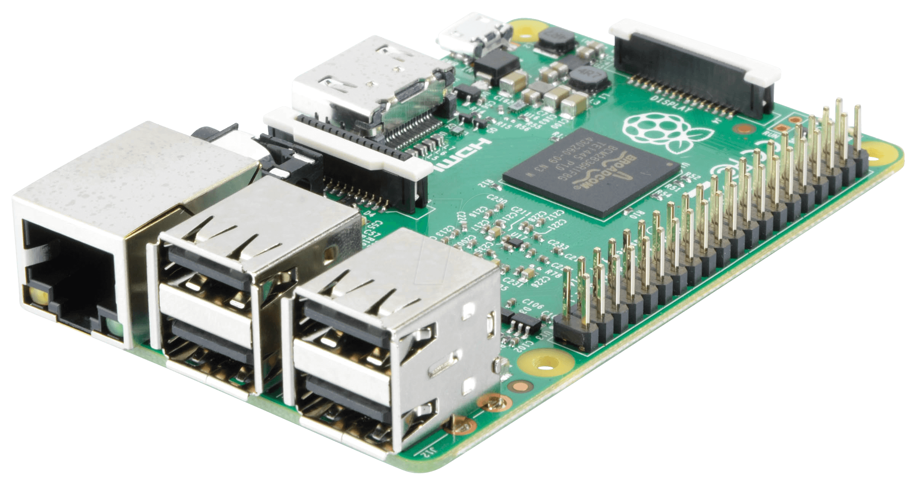
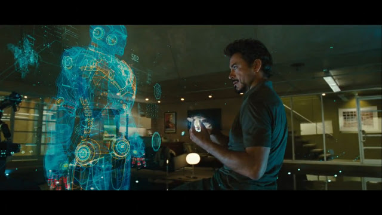

Welcome
Joe Grassl
Freelance codeslinger
>>Building a Voice-Activated Personal Assistant for $50
This is the 21st century and while not everyone has a flying car, there's no reason you can't have your very own AI companion! Products like Amazon Echo and Siri-enabled smartphones are neat, but they're a bit on the expensive side and don't offer the limitless customization mad scientists like us crave. Luckily, building a virtual assistant isn't as hard as it sounds.
>>Hardware

>>Software
After you set up the Pi, the real fun begins! In order for your Raspberry Pi to exact your will, it needs a few tools. First, you'll need to download
Blather, a speech recognizer that works using command pairs. You'll have a file called commands.conf which you can fill with lines like "open firefox:firefox" to, as you might guess, start Firefox. Simple right? For more complex tasks, you can use Python and packages like
Selenium or
Mechanize to handle web stuff. For clicking and typing things, I highly recommend
Xdotool. Of course, no digital butler would be complete without a cool synthetic voice! For this, you'll want
Festival, which can make use of some really nice
voices.
>>Teach Your Robot
Now, if you want to make this thing really cool, you can have it learn new commands on the fly. That is, you can write a command that writes new commands. First, you need to convert speech to text. There are a bunch of ways you could do this, but one of the easiest is simply writing a Blather command to browse to https://dictation.io using Google Chrome (or Chromium) and allow the site to use the mic. You'll probably need another command to hit backspace a few times in case any mistakes are made and one more to stop the site from listening, clean up the text, copy it, and insert the new command into the configuration file. Trust me, once you get this working, you'll feel like Tony Stark.

>>Ending Thoughts
There are certainly other upgrades you could add. If you have a spare monitor lying around, you could sync up a nice floating head GIF to play whenever your assistant speaks. Got any IP cameras? Hook 'em up to the Pi, add some
face recognition software and your assistant will be able to tell you who's at your door or snap pictures of potential intruders. The possibilities are endless!